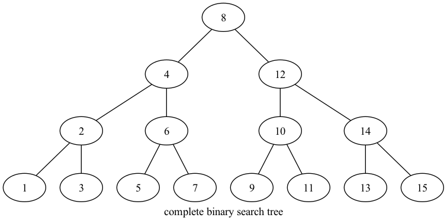
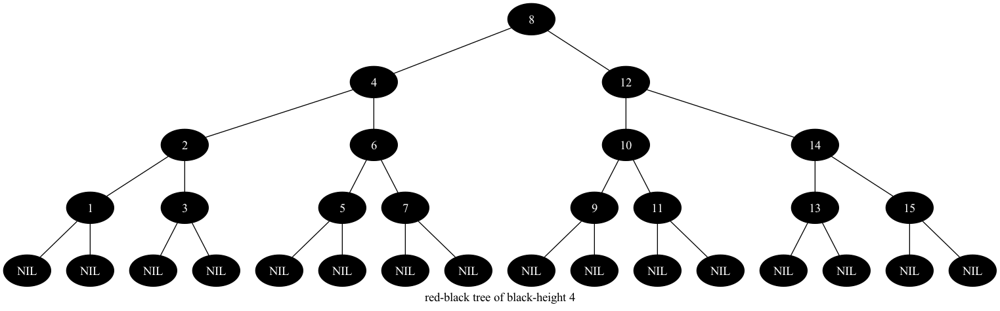

Chapter 13.1
13.1
13.1-1


13.1-2
Below is the tree after the node with key \(36\) is inserted.

If we color the inserted node red, the resulting tree is not a red-black tree, because the parent of the node is also colored red.
If we color the inserted node black, the resulting tree is not a red-black tree, because not all the simple paths from the root to descendant leaves contain the same number of black nodes.
13.1-3
The resulting tree will still be a red-black tree, because the trees rooted at \(T.root.left\) and \(T.root.right\) were red-black trees, and after we colored the root of \(T\) black, the tree \(T\) become a red-black tree.
13.1-4
The degree of a node is the number of edges connected to the node. Below are the possible degrees of a black node after all its red children are absorbed.
| Degree | Possible state of the node before absorption |
|---|---|
| 0 | The root of the tree with no child. |
| 1 | A leaf. |
| 2 | The root of the tree with two black children. |
| 3 | A non-root internal node with two black children. |
| 4 | A non-root internal node with a black child and a red child, and |
| the red child has two black children. | |
| 5 | A non-root internal node with two red children, and each red |
| child has two black children. |
The depths of the leaves of the resulting tree is the black height of the root in the original tree.
13.1-5
Since the children of a red node must be black, we know that the length of the longest simple path from a node \(x\) to a descendant leaf is at most \(2bh(x)\), and the shortest simple path from a node x to a descendant leaf is at least \(bh(x)\).
13.1-6
The largest possible number of internal nodes is \(2^{2k} - 1\), and the smallest possible number is \(2^k-1\).
13.1-7
The red-black tree on \(3\) keys with \(2\) red children of the root, has the largest possible ratio \(2\). The red-black tree which is a complete binary tree constructed by all black nodes, has the smallest possible ratio \(0\).